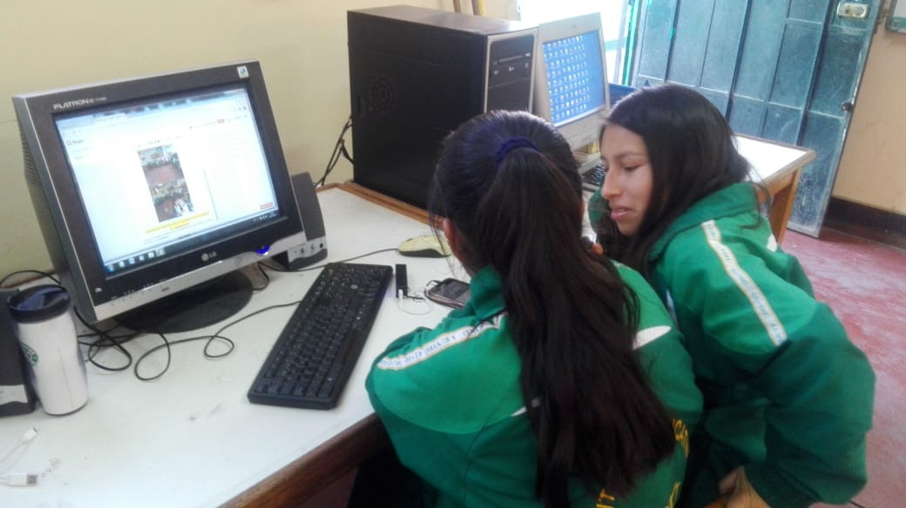

Hoy en dia, muchos estudiantes abandonan sus estudios antes de completar la educación secundaria.Este problema no solo afecta el desarrollo personal del estudiante, sino también el avance social y económico de un país.
Este proyecto busca crear conciencia, analizar las causas y proponer estrategias concretas para frenar este fenómeno.
- Las principales causas educativos:
a) Factores económicos: Muchos estudiantes dejan la escuela para trabajar y ayudar en casa, asi como la falta de recursos impide pagar pasajes, utiles, etc.
b) Problemas familiares: Entornos violentos afectan el rendimiento escolar. Asi cuando se cambian de domicilio por migración familiar.
c) Problemas emocionales y psicológicos:La ansiedad y estres en estudiantes son causantes de la desconexión con los estudios, enfrentado presión académica, bullying o falta de autoestima.
- ¿Qué puden hacer los estudiantes?
Pueden ayudarse entre sí, ser solidarios, invitar a sus compañeros a no rendirse, formar redes de apoyo estudiantil, participar activamente en sus clases, expresar sus ideas, y motivar a quienes estén desanimados. Cada acción cuenta y puede marcar una diferencia.
- Finalidad de nuestra página web:
Buscamos concientizar sobre la deserción escolar, sus causas y consecuencias, además de promover soluciones y demostrar que con compromiso, apoyo y motivación, todos podemos contribuir a que ningún estudiante abandone su educación. Queremos que esta plataforma sea un espacio de información, reflexión y acción.
¡No abandones tus sueños, porque lo mejor de ti aún está por construirse!
Consejor para sentirte motivado...IR A GOOGLE
"MOTIVADOS PARA SEGUIR APRENDIENDO"